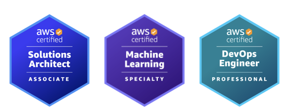

김경민 - 개발 좋아하는 DevOps Engineer
- 개인 블로그 : https://blog.kimkm.com
- 개인 github 주소 : https://github.com/kimkmari
- 연락처 : kimkmari04@gmail.com
DevOps
- AWS Resource 및 배포 툴을 이용하여 파이프라인 구축. ( CodePipeline , Jenkins, Github action, CircleCI )
- IaC를 활용한 AWS 클라우드 환경 구축. ( CDK , Terraform )
- 어플리케이션 개발 지원을 위한 AWS Resource 활용. ( Lambda , API Gateway , CloudFront )
- 사내 업무 향상을 위한 사내 어플리케이션 개발. ( Image Resizing , AWS Resource Exporter , ChatGPT Slack , EKS SandBox )
- 컨테이너화된 애플리케이션의 안전한 공급을 위한 DevSecOps 환경 구성 ( Prowler , Kubescape , ArgoCD , helm )
Career - 2024
JWT Authorizer Project
- 설명: AWS Gateway 혹은 CloudFront를 활용하여 RS384 알고리즘 기반 키 페어 방식의 JWT 토큰 인증 구현 프로젝트
- 구현: Java 21 런타임으로 설정된 Lambda를 사용하여 개발. AWS 리소스를 활용해 효율적인 캐싱을 구현하고 트래픽을 분산하여 과부하를 줄였습니다.
- 산출물:
Image Resizing Project
- 설명: CloudFront 또는 S3 Object Lambda Access Points를 이용하여 원본 이미지를 요청된 사이즈로 변환하는 프로젝트
- 구현: Node.js 20 런타임으로 설정된 Lambda를 사용하여 개발. 새로 생성된 이미지를 저장하지 않고 캐싱하여 제공하는 방식으로 자원 효율성을 극대화했습니다.
- 산출물:
AWS Exporter Project
- 설명: Slack과 Lambda를 이용해 특정 계정의 모든 AWS 리소스를 Excel 파일로 변환하는 사내 업무 효율화를 위한 애플리케이션 제작
- 구현: Python 3.12 런타임으로 설정된 Lambda를 사용하여 개발. Slack 커맨드를 통해 AWS 리소스 정보를 담은 Excel 파일을 반환하여 프로젝트 자원 현황표 작성 지원하였습니다.
- 산출물:
IaC CDK Project
- 설명: AWS CDK V2를 이용해 애플리케이션 배포 파이프라인 구축
- 구현: 모듈화된 구조로, 하나의 모듈을 이용하여 여러 프로젝트를 다양한 구성 정보로 배포 가능하도록 설정하여 재활용성을 높였습니다.
Career - 2023
Container Security Enhancement Project
- 설명: 다양한 조직의 EKS 환경을 표준화 하고 거버넌스를 수립하여 사용되는 컨테이너와 의존성의 안전성을 검증하는 프로젝트
- 구현: 중앙 저장소에 저장될 컨테이너의 취약성 검사, 서명, SBOM 생성 프로세스를 구축. 또한 kubescape를 활용한 Helm 차트 검증 프로세스 구축 Github Action을 통해 구현하였습니다.
Pipeline Project
- 설명: AWS ECS 클러스터 환경에서 Jenkins와 CodeDeploy를 이용한 컨테이터화된 애플리케이션 배포
- 구현: Node.js 기반 어플리케이션 배포. Microsoft Teams Messenger를 통한 파이프라인 제어를 구현하여 사용자 편의성을 향상하였고, 클러스터 환경을 통해 가용성을 확보하였습니다.
- 산출물:
EKS SandBox Project
- 설명: 실무자들이 원하는 세팅으로 간단하게 EKS 환경 및 대시보드를 구축할 수 있는 어플리케이션 배포
- 구현: Slack을 연동하여 사용자 친화적인 UI로 원하는 설정의 초기 세팅된 EKS 배포를 Terraform IaC tool을 이용해 배포.
- 산출물:
Career - 2022
Chat GPT Slack 용 application 개발
- 설명: nodejs 20을 이용한 slack 에서 사용할 수 있는 chat gpt 개발
- 구현: open AI api를 이용하여 구현하였습니다.
- 산출물:
Java Application Development Project
- 설명: JAVA17을 이용한 당근마켓 클론 API 서버 개발
- 구현: AWS Pipeline 을 이용해 배포하였습니다.
- 산출물:
Diary Mobile Application Project
- 설명: JAVA17을 이용한 모바일 다이어리 어플리케이션 개발
- 구현: Designer , Front Developer 와 협업하여 모바일 어플리케이션을 배포하였습니다.
- 산출물:
ETC
Translator 활동
- 설명: 2024년 현재 사내 영어 회의의 동시 통역가로 활동하고 있습니다. 다양한 기술을 영어로 설명하면서 외국인 고객과의 소통을 돕고있습니다.
중소벤처기업부 비대면 예비 창업 패키지 선정
- 설명: 2022년 배달 어플리케이션 아이디어를 제안하여 지원을 받고 모바일 어플리케이션 사업을 진행하였습니다.
자격증
- AWS Solutions Architect
- DevOps Engineer
- Machine Learning

PROFILE / CONTACT
- 1995.04.28
- 한양대학교 ERICA 신산업 공학 소프트웨어 학부 / 경영학부 복수 전공